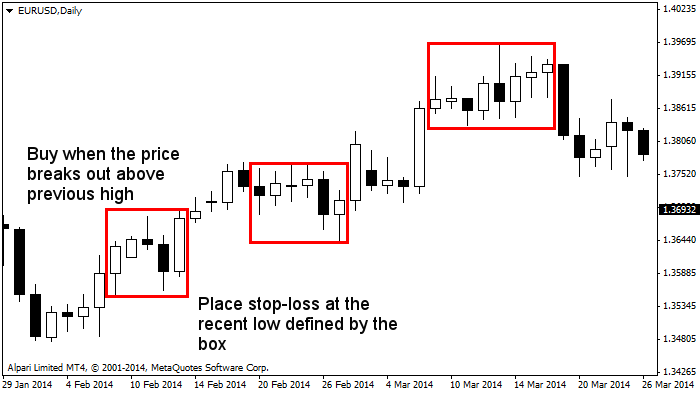

<!DOCTYPE html>
<html>
</html>
<head>
  <meta charset="utf-8">
  <meta http-equiv="X-UA-Compatible" content="IE=edge">
  <title>外汇站（fx-z.com） - 技术面分析</title>
  <meta name="description" content="">
  <meta name="viewport" content="width=device-width, initial-scale=1">
  <meta name="robots" content="all,follow">
  <!-- Bootstrap CSS-->
  <link rel="stylesheet" href="vendor/bootstrap/css/bootstrap.min.css">
  <!-- Font Awesome CSS-->
  <link rel="stylesheet" href="vendor/font-awesome/css/font-awesome.min.css">
  <!-- Google fonts - Roboto-->
  <link rel="stylesheet" href="https://fonts.googleapis.com/css?family=Roboto:400,300,700,400italic">
  <!-- owl carousel-->
  <link rel="stylesheet" href="vendor/owl.carousel/assets/owl.carousel.css">
  <link rel="stylesheet" href="vendor/owl.carousel/assets/owl.theme.default.css">
  <!-- theme stylesheet-->
  <link rel="stylesheet" href="css/style.default.css" id="theme-stylesheet">
  <!-- Custom stylesheet - for your changes-->
  <link rel="stylesheet" href="css/custom.css">
  <!-- Favicon-->
  <link rel="shortcut icon" href="img/favicon.png">
  <!-- Tweaks for older IEs--><!--[if lt IE 9]>
    <script src="https://oss.maxcdn.com/html5shiv/3.7.3/html5shiv.min.js"></script>
    <script src="https://oss.maxcdn.com/respond/1.4.2/respond.min.js"></script><![endif]-->
</head>
<body>
  <div id="all">
    <div class="container-fluid">
      <div class="row row-offcanvas row-offcanvas-left"> 
        <!--   *** SIDEBAR ***-->
        <div id="sidebar" class="col-md-4 col-lg-3 sidebar-offcanvas">
          <div class="sidebar-content">
            <h1 class="sidebar-heading"> <a href="https://fx-z.com">fx-z.com</a></h1>
            <p class="sidebar-p">介绍外汇相关的基本知识，告诉您如何进行自己的技术面和基本面分析，讲解先进的交易理念，并且为您阐述失败交易者与专业交易者之间的真正区别。 </p>
            <p class="sidebar-p">通过这些课程的学习，您将学会如何根据自己的优势来应用情绪分析，还将了解真实世界的事件会对货币汇率产生什么影响，央行在外汇市场中所发挥的作用，以及交易者在颇受欢迎的即期外汇交易中有哪些选择方案。 </p>
            <ul class="sidebar-menu">
                <!-- Link-->
                <li class="sidebar-item"><a href="https://fx-z.com" class="sidebar-link">首页</a></li>
                <!-- Link-->
                <li class="sidebar-item"><a href="cihui.html" class="sidebar-link">外汇词汇</a></li>
                <!-- Link-->
                <li class="sidebar-item"><a href="ebook.html" class="sidebar-link">获取外汇电子书</a></li>
            </ul>
            <p class="social"><a href="https://www.forextimechina.com.cn/zh?form=IZIN" target="_blank"data-animate-hover="pulse" class="external facebook"><i class="fa fa-eur"></i></a><a href="https://www.forextimechina.com.cn/zh?form=IZIN" target="_blank" data-animate-hover="pulse" class="external gplus"><i class="fa fa-gbp"></i></a><a href="https://www.forextimechina.com.cn/zh?form=IZIN" target="_blank" data-animate-hover="pulse" class="external twitter"><i class="fa fa-rmb"></i></a><a href="https://www.forextimechina.com.cn/zh?form=IZIN" target="_blank" title="" class="external instagram"><i class="fa fa-dollar"></i></a><a href="https://www.forextimechina.com.cn/zh?form=IZIN" target="_blank" data-animate-hover="pulse" class="email"><i class="fa fa-money"></i></a></p>
            <div class="copyright text-center text-md-left">
             
              
            </div>
          </div>
        </div>
        <!--   *** SIDEBAR END ***  -->
        <!--   *** DETAIL ***-->
        <div class="col-md-8 col-lg-9 content-column white-background">
          <div class="small-navbar d-flex d-md-none">
            <button type="button" data-toggle="offcanvas" class="btn btn-outline-primary"> <i class="fa fa-align-left mr-2"></i>菜单</button>
            <h1 class="small-navbar-heading"> <a href="https://fx-z.com/3-2.html">下一篇 </a></h1>
          </div>
          <div class="row">
            <div class="col-xl-10">
              <div class="content-column-content">
                <h1>技术面分析</h1>
        <p>
    技术面分析是指在不考虑背后原理的情况下对价格动向的分析，且预计近期价格动向将持续进行，从而为您提供获利机会。在技术面分析中，图表上的指标是关键的决策工具。
</p>
<p>
    <strong>一些关于技术面分析的实情：</strong>
</p>
<p>
    我们如今所说的技术面分析始于道琼斯指数的发明者 Charles Dow 于 20 世纪之交所做的观察。20 世纪 70 年代末，计算机尤其是电脑被广泛普及，此时正是技术面分析被广泛采用之时，而外汇正是首批被研究的资产类型。历史上的技术面分析面世之后被首先应用于股市中，但与基本面分析相比一直黯淡无光。Graham 与 Dodd 于 1934 年发表的 《证券分析》一书强调“价值投资”，令基本面分析大放异彩。但进入 2000 年后，大多数专业外汇交易者使用技术面分析，而不到一半的证券分析师使用或承认使用基本面分析。
</p>
<p>
    技术面分析师不喜欢“预测”一词，因为被衡量和预期的是一个可能的结果区间，而不是科学的准确预测。技术面分析是一种经验科学；它对可能结果的观察远远多于理论基础。各种竞争理论都强调一些技巧，但您无需为了使用技术面分析技巧而采用任何特别的理论。
</p>
<p>
    技术分析师相信价格不是随机的，认为它们大部分时间内都以重复的形态运动，并且可以被识别并重新用于交易。形态反复出现的原因是，交易者群体在任何一种证券或资产类型中的人类行为，而不是证券本身所固有的任何特征。
</p>
<p>
    技术分析师认为，经济、金融环境中的一切重要信息，包括关于证券本身的数据和新闻，都已反映于价格中，因此技术面分析师可以按照自己的意愿来选择是否研究环境。这被称为“不全信”。重要的是，技术面分析与基本面分析或经济分析并不矛盾。为了更好地预测，前沿的技术面分析师试图将技术面分析与基本面分析相结合。
</p>
<p>
    所有技术面分析的技巧均基于历史价格动向（无论这些历史数据有多新），因此预测只是分析师试验的一项技巧。任何图表都可以采用许多同等有效的方式来设置指标。同等成功的技术交易者可以采用相同的指标并达成不同的交易标准——例如止损位的设置。为十位分析师提供一种指标和一种证券，等交易竞赛结束后，他们将给出十项不同的结果，且所有结果均取得了净利润。
</p>
<p>
    一切都能有效地发挥作用。每种技巧都具有独特的优点和缺点。每种技巧都可以实现盈利。为十位技术面交易者提供同一种证券和十种不同的技巧，交易竞赛结束后，他们都可能获得盈利。
</p>
<p>
    <strong>核心理念</strong>
</p>
<p>
    一种证券的供应、需求和价格根据交易者的情绪以及他们对盈利机会的理解而上涨或下跌。情绪以及对盈利机会的理解可能由于市场条件和新闻的变化而发生改变，但令技术面分析师更感兴趣的是目前及将来的价格表现，而不是价格走向背后的原理。这有时被表述为价格有“什么”动向，而不是价格“为何”这样表现。
</p>
<p>
    第一本关于技术面分析性的主要著作的作者 Edwards 和 McGee 于 20 世纪 40 年代 末提出，所有价格序列或多或少展示出核心形态：
</p>
<p>
    先是一段主要的上行走势，然后是
</p>
<p>
    一段持平或区间盘整交易时期，或者
</p>
<p>
    第二次下行回落，且有所回调，但并未回复所有的初始上行走势，然后是
</p>
<p>
    另一段越过前一个高点并恢复主要涨势的上行走势。
</p>
<p>
    如果是下行走势，您只需将上述过程反转即可。
</p>
<p>
    基于 Edwards 和 McGee 的观察，移居美国的匈牙利经济学家 Nicolas Darvas 发明了首批最受欢迎的交易系统之一；他将“盒子”叠加与这种阶梯式形态之上。为此，他写了一本畅销书《How I Made 2,000,000 in the Stock Market》。在 Darvas 的盒子体系中有一条理论提到，当股票达到 52 周高点时买入，并且将止损位设于前一个最低点。首笔交易已经于 52 周高点完成，而后续交易于前一个盒子之上的突破点进行。这是一套采用矩形的简单体系，且目前仍在使用中。
</p>
<p>
    盒子示例
</p>
<p>
    Darvas 也许过于简单，甚至偏于粗糙，但它描绘了价格的爆发点，然后是一段横盘或次级回落走势，然后以初始方向再出现一段价格爆发。之后，分析师将这些爆发称为“推动”和“波浪”。无论您如何称呼形态，它都是所有技术面分析中的核心观察概念。
</p>
<p>
    如果您是一位使用长期指标（例如移动平均线）的趋势跟随者，您必须向一些可能会妨碍您盈利能力的回落妥协。
</p>
<p>
    如果您是一位突破交易者，您必须接受一些突破是虚假信号，而且您的止损位将被击中。
</p>
<p>
    如果您是一位动量交易者，您必须接受，证券有时不会呈现方向明确的动量，而是呈现区间盘整交易状态，从而造成动量指标 的误导性。
</p>
<p>
    <strong>建议：您可以认为，阅读专业分析师关于证券的所有建议不失为一种明智之举，但请注意——有些分析师是在“谈论他们自己的头寸”（推广他们已经持仓的价格走向，以怂恿您进入相同的交易）或胡言乱语。明智的分析师关注价格在图表上的表现，而不是分析师对于价格的说法。图表是用于过滤杂乱评论的工具。</strong>
</p>
<p>
    <br/>
</p>
<p>
    <br/>
</p>
              </div>
            </div>
          </div>
        </div>
      </div>
    </div>
  </div>
  <!-- JavaScript files-->
  <script src="vendor/jquery/jquery.min.js"></script>
  <script src="vendor/popper.js/umd/popper.min.js"> </script>
  <script src="vendor/bootstrap/js/bootstrap.min.js"></script>
  <script src="vendor/jquery.cookie/jquery.cookie.js"> </script>
  <script src="vendor/owl.carousel/owl.carousel.min.js"></script>
  <script src="vendor/masonry-layout/masonry.pkgd.min.js"></script>
  <script src="js/front.js"></script>
</body>